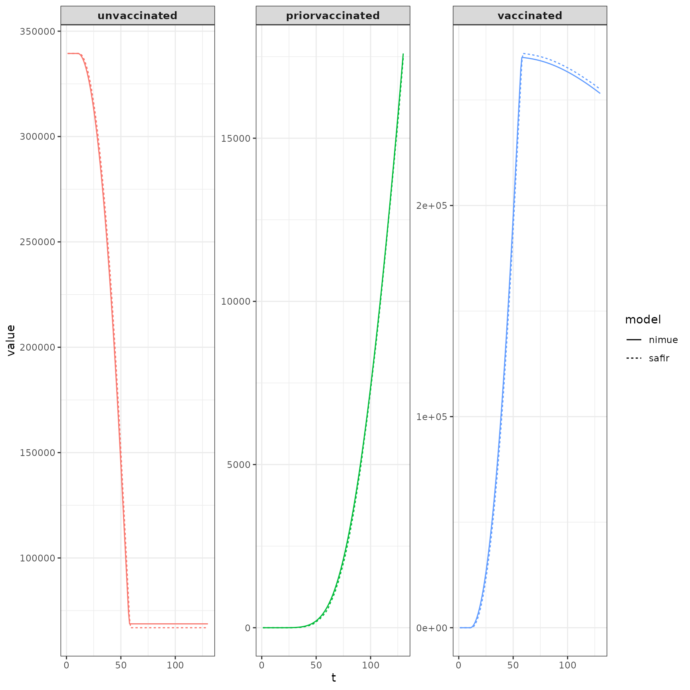
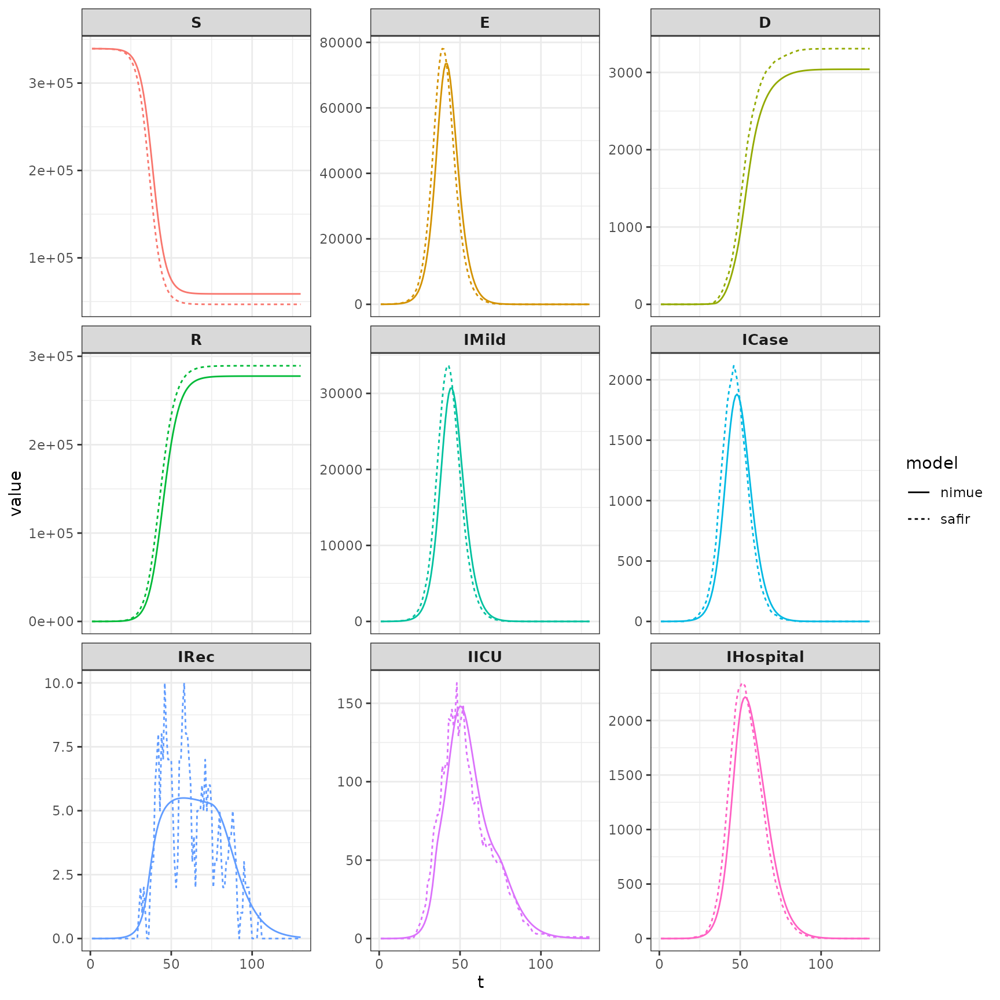

Let’s compare safir to nimue. Set up our parameters for running. We use a time step of 0.1 days.
Do a run of nimue with increasing vaccination.
library(safir)
library(nimue)
#>
#> Attaching package: 'nimue'
#> The following object is masked from 'package:base':
#>
#> format
library(data.table)
library(individual)
library(ggplot2)
iso3c <- "GBR"
pop <- safir::get_population(iso3c)
pop$n <- as.integer(pop$n / 2e2)
contact_mat <- squire::get_mixing_matrix(iso3c = iso3c)
tmax <- 200
R0 <- 4
# nimue run
increasing <- run(
time_period = tmax,
population = pop$n,
R0 = R0,
contact_matrix_set = contact_mat,
max_vaccine = c(0, seq(10, 1e4, length.out = 40)),
tt_vaccine = c(0, seq(10, 50, length.out = 40)),
vaccine_efficacy_disease = rep(0, 17),
vaccine_efficacy_infection = rep(0.9, 17)
)Do a safir run. Because running the individual based verion of nimue is computationally expensive, we use categorical_count_renderer_process_daily and integer_count_render_process_daily to only render output every day (as opposed to each timestep, which increment by 0.1). In addition, we use the C++ processes vaccination_process_nimue_cpp and infection_process_nimue_cpp (R versions are vaccination_process_nimue and infection_process_nimue_cpp; tests are included in the package to ensure the same results are returned when using identical random number seeds).
The function get_parameters_nimue grabs parameters directly from the nimue package. Then make the basic squire transmission model variables using create_variables. Then, attach additional variables to model nimue vaccines using create_vaccine_variables_nimue. The same routine is used to make events, calling create_events and create_events_nimue. Listeners are attached similarly.
Next, make renderer objects. Note that because we are only outputting simulation state every day despite the time step size, the number of time steps is equal to the number of days, not the total number of time steps taken. The process list can then be made, and finally setup_events_nimue is called to queue initial events (this allows the model to be initialized from any valid state, not just S and E individuals).
dt <- 0.1
parameters <- get_parameters_nimue(
population = pop$n,
contact_mat = contact_mat,
time_period = tmax,
R0 = R0,
max_vaccine = c(0, seq(10, 1e4, length.out = 40)),
tt_vaccine = c(0, seq(10, 50, length.out = 40)),
vaccine_efficacy_disease = rep(0, 17),
vaccine_efficacy_infection = rep(0.9, 17),
dt = dt
)
timesteps <- parameters$time_period/dt
variables <- create_variables(pop = pop, parameters = parameters)
variables <- create_vaccine_variables_nimue(variables = variables,pop = pop)
events <- create_events(parameters = parameters)
events <- create_events_nimue(events = events,parameters = parameters)
attach_event_listeners(variables = variables,events = events,parameters = parameters, dt = dt)
attach_event_listeners_nimue(variables = variables,events = events,parameters = parameters,dt = dt)
renderer <- Render$new(parameters$time_period)
vaxx_renderer <- Render$new(parameters$time_period)
processes <- list(
vaccination_process_nimue_cpp(parameters = parameters,variables = variables,events = events,dt = dt),
infection_process_nimue_cpp(parameters = parameters,variables = variables,events = events,dt = dt),
categorical_count_renderer_process_daily(renderer = renderer, variable = variables$state, categories = variables$states$get_categories(),dt = dt),
integer_count_render_process_daily(renderer = vaxx_renderer,variable = variables$vaccine_states,margin = 1:4,dt = dt)
)
setup_events_nimue(parameters = parameters,events = events,variables = variables,dt = dt)
system.time(
simulation_loop_nimue(
variables = variables,
events = events,
processes = processes,
timesteps = timesteps,
progress = FALSE
)
)
#> user system elapsed
#> 49.922 2.719 52.684Compare vaccinations. These are spot-on.
safir_vax_dt <- as.data.table(vaxx_renderer$to_dataframe())
safir_vax_dt[ , "vaccinated" := X2_count + X3_count ]
safir_vax_dt[ , c("X2_count","X3_count") := NULL]
setnames(x = safir_vax_dt,old = c("X1_count","X4_count"),new = c("unvaccinated","priorvaccinated"))
safir_vax_dt <- melt(safir_vax_dt,id.vars = "timestep",variable.name = "compartment")
setnames(safir_vax_dt,old = "timestep",new = "t")
safir_vax_dt[, "model" := "safir"]
nimue_vax_dt <- as.data.table(format(increasing, compartments = NULL,summaries = c("unvaccinated","vaccinated","priorvaccinated")))
nimue_vax_dt[, replicate := NULL]
nimue_vax_dt[, "model" := "nimue"]
combined_vax_dt <- rbind(safir_vax_dt,nimue_vax_dt)plot it.
ggplot(data = combined_vax_dt) +
geom_line(aes(x=t,y=value,color=compartment,linetype=model,group=model)) +
facet_wrap(.~compartment,scales="free_y") +
guides(color = FALSE)+
theme_bw()+
theme(strip.text.x = element_text(size=10,face = "bold"))
#> Warning: `guides(<scale> = FALSE)` is deprecated. Please use `guides(<scale> =
#> "none")` instead.
Compare state (compartments) output. Because nimue is an ODE model the convergence of safir to it’s results is highly dependent upon the size of dt. Smaller dt will lead to more similar results. The stochastic version of squire, on the other hand, uses a discretization of the continuous time Markov process so results should look exactly identical between those two with the same dt.
# extract data - state
safir_compartments<- c("S","E","D","R","IMild","ICase","IRec","IOxGetDie","IOxNotGetDie","IOxNotGetLive","IOxGetLive","IMVNotGetDie","IMVNotGetLive","IMVGetLive","IMVGetDie")
nimue_compartments<- c("S","E","D","R","IMild","ICase","IRec","IICU","IHospital")
df <- renderer$to_dataframe()
safir_dt <- as.data.table(df)
safir_dt[, IMild_count := IMild_count + IAsymp_count]
safir_dt[, IAsymp_count := NULL]
safir_dt[, IICU_count := IMVNotGetDie_count + IMVNotGetLive_count + IMVGetLive_count + IMVGetDie_count]
safir_dt[, c("IMVNotGetDie_count","IMVNotGetLive_count","IMVGetLive_count","IMVGetDie_count") := NULL]
safir_dt[, IHospital := IOxGetDie_count + IOxNotGetDie_count + IOxNotGetLive_count + IOxGetLive_count]
safir_dt[, c("IOxGetDie_count", "IOxNotGetDie_count", "IOxNotGetLive_count", "IOxGetLive_count") := NULL]
safir_dt <- melt(safir_dt,id.vars = "timestep",variable.name = "compartment",value.name = "value")
safir_dt[, compartment := gsub("(^)(\\w*)(_count)", "\\2", compartment)]
setnames(safir_dt,old = "timestep",new = "t")
safir_dt <- safir_dt[compartment %in% nimue_compartments, ]
safir_dt[ ,"model" := "safir"]
nimue_dt <- as.data.table(format(increasing, compartments = nimue_compartments))
nimue_dt[ , replicate := NULL]
nimue_dt <- nimue_dt[compartment %in% nimue_compartments, ]
nimue_dt[ ,"model" := "nimue"]
combined_dt <- rbind(nimue_dt,safir_dt)plot it.
ggplot(data = combined_dt) +
geom_line(aes(x=t,y=value,color=compartment,group=model,linetype=model)) +
facet_wrap(.~compartment,scales="free_y")+
guides(color = FALSE)+
theme_bw()+
theme(strip.text.x = element_text(size=10,face = "bold"))
#> Warning: `guides(<scale> = FALSE)` is deprecated. Please use `guides(<scale> =
#> "none")` instead.
The function get_parameters_nimue is used to generate parameters from the nimue model, and source code is in R/parameters_nimue.R.
The function create_vaccine_variables_nimue adds additional information needed for the model to the output of create_variables. It can be found in R/variables_vaccines.R.
The function create_events_nimue attaches additional events for modeling the vaccination process to the events list. attach_event_listeners_nimue attaches additional listeners to the vaccination events. Both functions can be found in R/events_vaccination_nimue.R.
setup_events_nimue initializes event scheduling based on the initial state of the model. This is needed so that the model can be initialized from any valid state, instead of just S and E persons who are unvaccinated. It can be found in R/initialize_events_nimue.R.
The infection process can either use an R implementation infection_process_nimue or C++ implementation infection_process_nimue_cpp. The R version is in R/process_infection_nimue.R and the C++ one in src/process_infection_nimue.cpp.
Likewise the vaccination process has the R version vaccination_process_nimue and vaccination_process_nimue_cpp, in R/process_vaccination_nimue.R and src/process_vaccination_nimue.cpp, respectively.